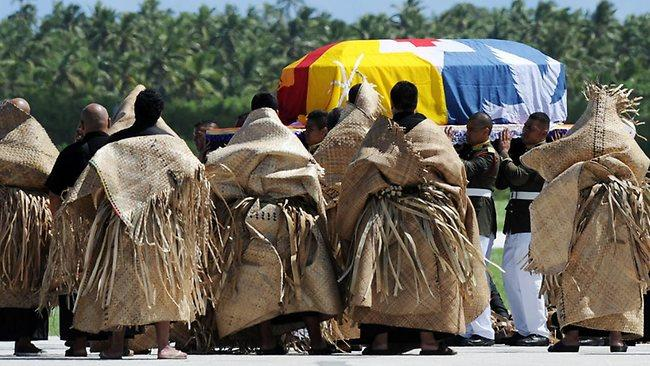
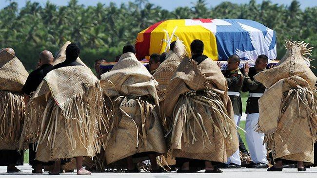

The different types of Ta'ovala
 

The tongan ta'ovala is a very important cloth to the tongan people. It's importance is rooted in our values and who we are as people. There's many different types of ta'ovala for different occassions.
A common type of ta'ovala is the lokeha. The lokeha is a ta'ovala made from the lo'akau, which are pandanus leaves. There's also the ta'ovala fau made from the fau tree. These ta'ovala are what you would see people wearing to church, work or even school.
There's also the ta'ovala that you would wear to the putu(funeral). At the putu, you would see some people wear the ave'ave. It's also made from the lo'akau and is put on top of the ta'ovala. You always wear your worn out and old ta'ovala to the funeral. This is to show respect and to show that your mourning. The Liongi(grieving family) wear the papa which is the entire mat of the ta'ovala. They cook the food and prepare everything for the funeral.
HTML and CSS
Hypertext Markup Language (HTML) and Cascading Style Sheets (CSS) are two common tools used two create and present digital media. In the same way that English, Māori and Sign language are the official languages of New Zealand that are used to create traditional media, HTML and CSS are two of the official languages of the Internet used to create web pages and many Apps.
As with any language, digital or not, they change over time and have "official" versions. The current official HTML version is 5 and CSS is 3.
HTML describes the structure and meaning of your media. It says, "this part is a heading" or "this part is a paragraph" or "this part is a navigation block". CSS is used for the presentation. It tells your device how to display the media and can tell different devices to display the same media differently.
For example, take a look at the LearnCoach web site as it appears on a mobile devices and on a desktop web browser. The information is the same, but using CSS, the presentation is different.